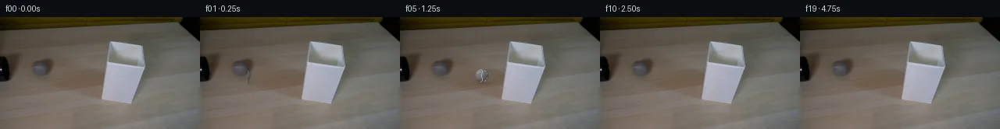

![首帧]()

Round 00
2026-11-05T10:06:19.624956+00:00像素候选变化代码 +187/−0inspection 更新
pixels 2f09f442e3a7cb40 · code 156edaa55c59e950
查看本轮 generate.py 真实 diff
--- previous/generate.py +++ current/generate.py @@ -0,0 +1,187 @@ +#!/usr/bin/env python3 +"""Generate the 20-frame PixelWorld continuation from first_frame.png.""" + +from pathlib import Path + +import numpy as np +from PIL import Image, ImageDraw +from scipy import ndimage + +import artifact_io + + +ROOT = Path(__file__).resolve().parent +H, W = 144, 256 + + +def over(dst, color, alpha): + """Alpha-composite either a constant RGB or an RGB image over dst.""" + a = np.clip(alpha, 0.0, 1.0)[..., None] + return dst * (1.0 - a) + np.asarray(color, np.float32) * a + + +def largest_component(mask): + labels, count = ndimage.label(mask) + if count == 0: + return mask + sizes = ndimage.sum(mask, labels, range(1, count + 1)) + return labels == (int(np.argmax(sizes)) + 1) + + +def make_lamp_occluder(base): + """Extract the bright, cool-neutral lampshade silhouette numerically.""" + r, g, b = [base[:, :, i].astype(np.int16) for i in range(3)] + yy, xx = np.mgrid[:H, :W] + roi = (xx >= 125) & (xx <= 191) & (yy >= 25) & (yy <= 114) + candidate = roi & (r > 112) & (g > 115) & (b > 126) & (b >= r + 2) + solid = largest_component(candidate) + solid = ndimage.binary_closing(solid, iterations=2) + solid = ndimage.binary_fill_holes(solid) + # A one-pixel dilation includes the antialiased perimeter from the source. + solid = ndimage.binary_dilation(solid, iterations=1) + return ndimage.gaussian_filter(solid.astype(np.float32), 0.42) + + +def ball_layer(cx, cy, radius, rotation): + """Return procedural grey felt tennis-ball RGB and antialiased alpha.""" + yy, xx = np.mgrid[:H, :W] + u = (xx + 0.5 - cx) / radius + v = (yy + 0.5 - cy) / radius + rho2 = u * u + v * v + # A soft one-pixel coverage ramp at the circular contour. + alpha = np.clip((1.0 - np.sqrt(np.maximum(rho2, 0.0))) * radius + 0.55, 0.0, 1.0) + z = np.sqrt(np.clip(1.0 - rho2, 0.0, 1.0)) + + # Upper-left key light and gentle ambient fill make the disc read as a sphere. + light = np.array([-0.48, -0.62, 0.62], np.float32) + light /= np.linalg.norm(light) + diffuse = np.clip(u * light[0] + v * light[1] + z * light[2], 0.0, 1.0) + rim = np.clip(z, 0.0, 1.0) ** 0.35 + intensity = 0.54 + 0.42 * diffuse + 0.10 * rim + + # Inverse y-axis rotation maps visible normals into ball-fixed coordinates. + c, s = np.cos(rotation), np.sin(rotation) + ox = c * u - s * z + oy = v + oz = s * u + c * z + + # Fine, deterministic, object-attached variation suggests grey tennis felt. + felt = ( + 2.7 * np.sin(43.0 * ox + 31.0 * oy + 17.0 * oz) + + 1.8 * np.sin(79.0 * ox - 53.0 * oy + 29.0 * oz) + + 1.2 * np.cos(113.0 * ox + 61.0 * oy - 37.0 * oz) + ) + base_color = np.array([122.0, 126.0, 127.0], np.float32) + rgb = base_color[None, None, :] * intensity[..., None] + felt[..., None] + + # Two bowed, ball-fixed curves form a recognizable rotating tennis seam. + target = 0.38 + 0.15 * np.cos(np.pi * oy) + seam_distance = np.abs(np.abs(ox) - target) + seam = np.clip((0.075 - seam_distance) / 0.045, 0.0, 1.0) + seam *= np.clip((z + 0.12) / 0.22, 0.0, 1.0) + seam_color = np.array([176.0, 178.0, 174.0], np.float32) + rgb = rgb * (1.0 - seam[..., None] * 0.78) + seam_color * seam[..., None] * 0.78 + + # A small soft specular spot remains attached to the illumination, not texture. + spec = np.clip((diffuse - 0.78) / 0.22, 0.0, 1.0) ** 3 + rgb += spec[..., None] * np.array([18.0, 19.0, 20.0], np.float32) … diff truncated; 100 more lines …